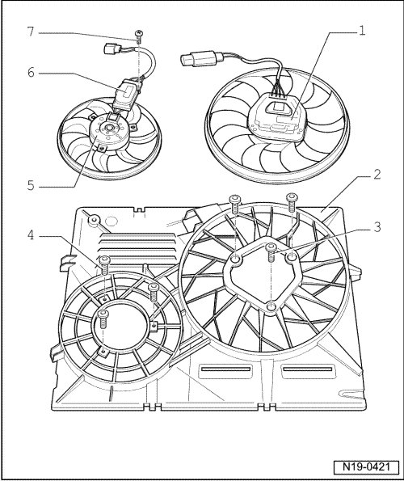

LEMON Manuals
: Even more car manuals for everyone: 1960-2025
Home
>>
Volkswagen
>>
2004
>>
Touareg (7LA) V6-3.2L (BAA)
>>
Repair and Diagnosis
>>
Engine, Cooling and Exhaust
>>
Cooling System
>>
Radiator Cooling Fan
>>
Service and Repair
Radiator Cooling Fan: Service and Repair
Coolant Fan, Assembly Overview

1
Coolant fan (V7)
2
Fan support
3
10 Nm
4
10 Nm
5
Coolant fan 2 (V177)
6
Coolant Fan Control (FC) control module (J293)
7
10 Nm